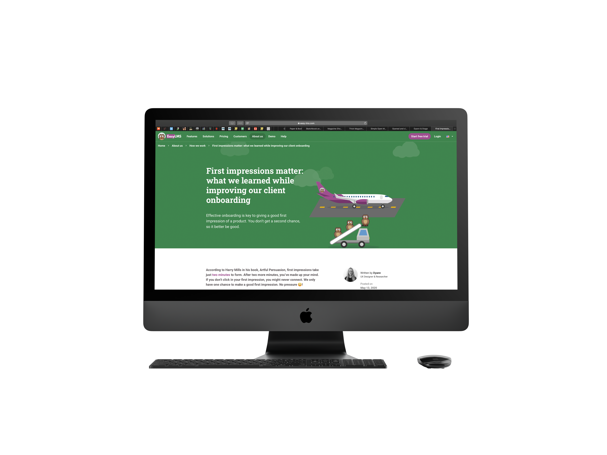

Stage
Over het bedrijf
Easy LMS is een internationaal groeiend bedrijf dat zich specialiseert in onderwijstechnologie. Ze willen de beste gebruikerservaring bieden aan klanten, hun medewerkers of studenten. Ze streven er elke dag naar om Easy LMS te verbeteren en een goede ondersteuning te bieden aan haar klanten.
Ontwerpvraag
Hoe kan Easy LMS potentiële klanten voorzien van een leerzaam en gemakkelijk onboardingsproces?
Publicatie
Over mijn werkzaamheden tijdens mijn stage heb ik een artikel geschreven. Hierin leg ik uit wat we door middel van mijn onderzoek hebben veranderd aan het onboardingsproces.
Wat ik heb geleerd
Focus
Aan het eind van mijn stage werk ik aan maximaal twee taken tegelijk.
Belanghebbenden
Aan het eind van mijn stage betrek ik stakeholders actief in het proces.
Visuele informatie
Aan het eind van mijn stage presenteer ik mijn onderzoek op visuele wijze.
Overdraagbaarheid
Aan het eind van mijn stage zijn mijn producten overdraagbaar.
Planning
Aan het eind van mijn stage kan ik een ontwerpproces plannen.
Verantwoording
Aan het eind van mijn stage kan ik mijn ontwerpbeslissingen onderbouwen.
Data
Aan het eind van mijn stage kan ik kwantitatieve data gebruiken in het ontwerpproces.
Gebruikerstest
Aan het eind van mijn stage voer ik goede gebruikerstests uit.
Resultaat
Tijdens mijn stage ben ik vooral aan de slag geweest als UX-researcher. Daarbij heb ik veel onderzoek gedaan naar de gebruiker en het product. Ik vond het erg interessant om hier een half jaar op te kunnen focussen en er veel over te leren.
Ik heb gemerkt dat ik het lastig vind om vanuit de gebruiker te blijven denken terwijl ik me constant in de omgeving van de opdrachtgever bevind. Ik ben daardoor sneller geneigd om vanuit het bedrijf te denken, dan als ik met het team op een andere locatie werk dan de opdrachtgever.